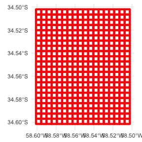
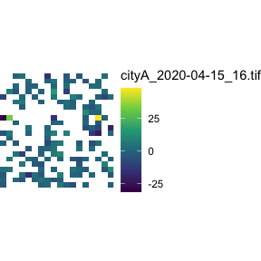
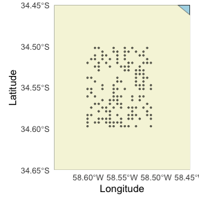
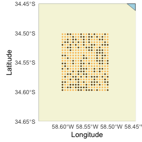
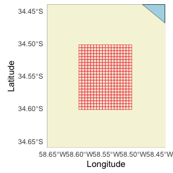
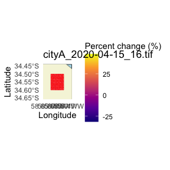

Converting Facebook Mobility QuadKey-identified Datasets into Raster Files
Florencia D’Andrea
2024-03-14
Source:vignettes/facebook_mobility_csvs_to_raster_files.Rmd
facebook_mobility_csvs_to_raster_files.RmdPlease, visit the README for general information about this package
This section focuses on creating a raster from QuadKey data formatted as provided by Facebook mobility data. If you want to convert other QuadKey-identified datasets you can read the previous vignette.
Facebook mobility data for each location and zoom level is stored in
a separate csv file for each day and time.
1 Basic workflow

1.1 Reading and
formatting multiple csv Files
All these files are for the same area and zoom level, but dates and hours will change. This information will be evident in the filenames:
cityA_2020_04_15_0800.csv.read_fb_mobility_files()prints a message with the days or hours missing among the provided files.The columns
dayandhourare created internally.
files <- quadkeyr::read_fb_mobility_files(
path_to_csvs = paste0(system.file("extdata",
package = "quadkeyr"), "/"),
colnames = c( # The columns not listed here will be omitted
"lat",
"lon",
"quadkey",
"date_time",
"n_crisis",
"percent_change",
"day",
"hour"
),
coltypes = list(
lat = 'd',
lon = 'd',
quadkey = 'c',
date_time = 'T',
n_crisis = 'c',
percent_change = 'c',
day = 'D',
hour = 'i'
)
)
head(files)
#> # A tibble: 6 × 8
#> lat lon quadkey date_time n_crisis percent_change day
#> <dbl> <dbl> <chr> <dttm> <dbl> <dbl> <date>
#> 1 -34.6 -58.6 2103213001… 2020-04-15 00:00:00 NA 2.86 2020-04-15
#> 2 -34.5 -58.6 2103213001… 2020-04-15 00:00:00 NA -2.60 2020-04-15
#> 3 -34.6 -58.6 2103213001… 2020-04-15 00:00:00 NA 1.46 2020-04-15
#> 4 -34.5 -58.5 2103213001… 2020-04-15 00:00:00 NA 2.61 2020-04-15
#> 5 -34.5 -58.5 2103213001… 2020-04-15 00:00:00 NA 3.24 2020-04-15
#> 6 -34.5 -58.6 2103213001… 2020-04-15 00:00:00 NA 1.17 2020-04-15
#> # ℹ 1 more variable: hour <dbl>Note: The Facebook mobility data used in
quadkeyrhas been altered and doesn’t represent real values. The examples in this vignette are only to demostrate how functions work. Please, contact Data for Good to get datasets.
1.2 Create a Quadkey polygon grid for your area of analysis
This function generates a sf POLYGON data.frame with a
quadkey and geometry column.
You might be wondering why we’re not using the function we’ve already
created, add_regular_polygon_grid(), which adds a column
with QuadKey polygons, creating a regular grid, to an existing
data.frame.
There are two reasons for why we’re using a different approach:
1 - The read_fb_mobility_files() output contains
multiple datasets for the same area with the almost the same QuadKeys
reported. Using a function that calculates each QuadKey by row would
unnecessarily duplicate calculations.
2 - When you receive Facebook mobility data, you might not always get exactly the same QuadKeys in all the files, even if they all report the same area. This is especially important considering that you may be receiving new files in the future with QuadKeys that haven’t been reported yet.
That’s why we create an sf POLYGON data.frame, retaining
all the QuadKey polygons within the area of analysis, and then proceed
to join the results.
If creating the regular polygon grid using the bounding box of the
provided QuadKeys may not work for your case, you can directly create
the grid for the full area of analysis using
create_qk_grid() function. Read the the
previous vignette to learn more about this function.
regular_grid <- quadkeyr::get_regular_polygon_grid(data = files)
head(regular_grid$data)
#> Simple feature collection with 6 features and 3 fields
#> Geometry type: POLYGON
#> Dimension: XY
#> Bounding box: xmin: -58.59009 ymin: -34.59252 xmax: -58.52417 ymax: -34.51108
#> Geodetic CRS: WGS 84
#> # A tibble: 6 × 4
#> # Rowwise:
#> quadkey geometry tileX tileY
#> <chr> <POLYGON [°]> <dbl> <dbl>
#> 1 2103213001233302 ((-58.55713 -34.588, -58.55164 -34.588, -58.5516… 22108 39485
#> 2 2103213001213202 ((-58.5791 -34.51561, -58.57361 -34.51561, -58.5… 22104 39469
#> 3 2103213001233221 ((-58.57361 -34.59252, -58.56812 -34.59252, -58.… 22105 39486
#> 4 2103213001231110 ((-58.54614 -34.52919, -58.54065 -34.52919, -58.… 22110 39472
#> 5 2103213001320003 ((-58.52966 -34.53371, -58.52417 -34.53371, -58.… 22113 39473
#> 6 2103213001230110 ((-58.59009 -34.52919, -58.58459 -34.52919, -58.… 22102 39472
ggplot() +
geom_sf(data = regular_grid$data,
color = 'red',
linewidth = 1.5,
fill = NA) +
theme_minimal()
Now, we can merge this grid with the Facebook mobility data in the
files data.frame. We’ve chosen to use an
dplyr::inner_join() that will retain only the polygons
reported in the files.
files_polygons <- files |>
dplyr::inner_join(regular_grid$data,
by = c("quadkey"))
head(files_polygons)
#> # A tibble: 6 × 11
#> lat lon quadkey date_time n_crisis percent_change day
#> <dbl> <dbl> <chr> <dttm> <dbl> <dbl> <date>
#> 1 -34.6 -58.6 2103213001… 2020-04-15 00:00:00 NA 2.86 2020-04-15
#> 2 -34.5 -58.6 2103213001… 2020-04-15 00:00:00 NA -2.60 2020-04-15
#> 3 -34.6 -58.6 2103213001… 2020-04-15 00:00:00 NA 1.46 2020-04-15
#> 4 -34.5 -58.5 2103213001… 2020-04-15 00:00:00 NA 2.61 2020-04-15
#> 5 -34.5 -58.5 2103213001… 2020-04-15 00:00:00 NA 3.24 2020-04-15
#> 6 -34.5 -58.6 2103213001… 2020-04-15 00:00:00 NA 1.17 2020-04-15
#> # ℹ 4 more variables: hour <dbl>, geometry <POLYGON [°]>, tileX <dbl>,
#> # tileY <dbl>If you want to modify any of the variables you intend to use, it
should be done before this point. For
example,apply_weekly_lag() applies a 7 day lag to
n_crisis and percent_change creating new
variables. You could apply this function to files and then
select the resulting variable percent_change_7 as the
argument var in polygon_to_raster() We are not
demonstrating it in this example.
Now that we have the polygons, let’s create the raster files.
# Generate the raster files
quadkeyr::polygon_to_raster(data = files_polygons,
nx = regular_grid$num_cols,
ny = regular_grid$num_rows,
template = files_polygons,
var = 'percent_change',
filename = 'cityA',
path = paste0( system.file("extdata",
package = "quadkeyr"),
"/"))
raster <- stars::read_stars(paste0(system.file("extdata",
package = "quadkeyr"),
"/cityA_2020-04-15_16.tif"))
# More about plotting:
# https://r-spatial.github.io/stars/reference/geom_stars.html
ggplot() +
geom_stars(data = raster) +
coord_equal() +
theme_void() +
scale_fill_viridis_c(na.value = "transparent")+
scale_x_discrete(expand=c(0,0))+
scale_y_discrete(expand=c(0,0))
2 Advanced use: intermediate functions
The function get_regular_polygon_grid() is a wrapper for
quadkey_to_latlong(), regular_qk_grid(), and
grid_to_polygon(). Let’s explore how these functions are
operating in isolation.
We will work with the output of the
read_fb_mobility_files(), the same that we have already
used in the basic workflow:
head(files)
#> # A tibble: 6 × 8
#> lat lon quadkey date_time n_crisis percent_change day
#> <dbl> <dbl> <chr> <dttm> <dbl> <dbl> <date>
#> 1 -34.6 -58.6 2103213001… 2020-04-15 00:00:00 NA 2.86 2020-04-15
#> 2 -34.5 -58.6 2103213001… 2020-04-15 00:00:00 NA -2.60 2020-04-15
#> 3 -34.6 -58.6 2103213001… 2020-04-15 00:00:00 NA 1.46 2020-04-15
#> 4 -34.5 -58.5 2103213001… 2020-04-15 00:00:00 NA 2.61 2020-04-15
#> 5 -34.5 -58.5 2103213001… 2020-04-15 00:00:00 NA 3.24 2020-04-15
#> 6 -34.5 -58.6 2103213001… 2020-04-15 00:00:00 NA 1.17 2020-04-15
#> # ℹ 1 more variable: hour <dbl>There are two functions wrapped inside
read_fb_mobility_files() that you may want to use
individually:
- If you wish to correct the Facebook-provided format only, you can
utilize the
format_fb_data()function. - If you need to retrieve the missing combinations of days and hours
in a temporal sequence of files, you can employ
missing_combinations().
Please, refer to the examples in the functions’ documentation to understand better how they work.
2.1 Convert the QuadKeys to latitude/longitude coordinates
Even if these files correspond to the same location, the amount of QuadKeys reported could vary.
To start, we will select from all the files the QuadKeys that appear
at least once and convert them to an sf POINT data.frame
using quadkey_to_latlong()
quadkey_vector <- unique(files$quadkey)
qtll <- quadkey_to_latlong(quadkey_data = quadkey_vector)
head(qtll)
#> Simple feature collection with 6 features and 1 field
#> Geometry type: POINT
#> Dimension: XY
#> Bounding box: xmin: -58.59009 ymin: -34.59704 xmax: -58.52417 ymax: -34.50203
#> Geodetic CRS: WGS 84
#> quadkey geometry
#> 150 2103213001322002 POINT (-58.53516 -34.56538)
#> 149 2103213001320010 POINT (-58.52417 -34.52466)
#> 148 2103213003011101 POINT (-58.55164 -34.59704)
#> 147 2103213001212132 POINT (-58.59009 -34.50203)
#> 146 2103213001233232 POINT (-58.56812 -34.59252)
#> 145 2103213001213300 POINT (-58.55713 -34.50656)Let’s plot the QuadKey grid.

2.2 Complete the grid
Some of the QuadKeys inside the bounding box are missing, we can’t
consider this a regular grid. In order to create the raster images, we
need to obtain a regular grid. We can do that with the function
regular_qk_grid(). Pay attention that the output is a list
with three elements:
-
data. -
num_rowsand;
-
num_cols.
regular_grid <- regular_qk_grid(data = qtll)
head(regular_grid)
#> $data
#> Simple feature collection with 396 features and 1 field
#> Geometry type: POINT
#> Dimension: XY
#> Bounding box: xmin: -58.60107 ymin: -34.59704 xmax: -58.50769 ymax: -34.50203
#> Geodetic CRS: WGS 84
#> First 10 features:
#> quadkey geometry
#> 246 2103213001302123 POINT (-58.50769 -34.50203)
#> 245 2103213001302033 POINT (-58.51868 -34.50203)
#> 244 2103213001302032 POINT (-58.52417 -34.50203)
#> 243 2103213001302023 POINT (-58.52966 -34.50203)
#> 242 2103213001213133 POINT (-58.54065 -34.50203)
#> 241 2103213001213123 POINT (-58.55164 -34.50203)
#> 240 2103213001213122 POINT (-58.55713 -34.50203)
#> 239 2103213001213032 POINT (-58.56812 -34.50203)
#> 238 2103213001213023 POINT (-58.57361 -34.50203)
#> 237 2103213001213022 POINT (-58.5791 -34.50203)
#>
#> $num_rows
#> [1] 22
#>
#> $num_cols
#> [1] 18The outputs num_cols and num_rows refer to
the number of columns and rows, information that we will use to create
the raster.
The original 150-point grid now has one point per row and cell, resulting in a complete grid of 369 points, as depicted in the plot. The additional points are highlighted in orange:

2.3 Create the polygons
Now we can transform the QuadKeys into polygons.
polygrid <- quadkeyr::grid_to_polygon(data = regular_grid$data)
head(polygrid)
#> Simple feature collection with 6 features and 3 fields
#> Geometry type: POLYGON
#> Dimension: XY
#> Bounding box: xmin: -58.59009 ymin: -34.59252 xmax: -58.52417 ymax: -34.51108
#> Geodetic CRS: WGS 84
#> # A tibble: 6 × 4
#> # Rowwise:
#> quadkey geometry tileX tileY
#> <chr> <POLYGON [°]> <dbl> <dbl>
#> 1 2103213001233302 ((-58.55713 -34.588, -58.55164 -34.588, -58.5516… 22108 39485
#> 2 2103213001213202 ((-58.5791 -34.51561, -58.57361 -34.51561, -58.5… 22104 39469
#> 3 2103213001233221 ((-58.57361 -34.59252, -58.56812 -34.59252, -58.… 22105 39486
#> 4 2103213001231110 ((-58.54614 -34.52919, -58.54065 -34.52919, -58.… 22110 39472
#> 5 2103213001320003 ((-58.52966 -34.53371, -58.52417 -34.53371, -58.… 22113 39473
#> 6 2103213001230110 ((-58.59009 -34.52919, -58.58459 -34.52919, -58.… 22102 39472
Once we have the complete grid of QuadKey polygons, we combined the
information with the Facebook data in files. In this step,
we can select the variables that will be part of the analysis and also
create new variables if needed.
polyvar <- files |>
dplyr::inner_join(polygrid, by = 'quadkey')
head(polyvar)
#> # A tibble: 6 × 11
#> lat lon quadkey date_time n_crisis percent_change day
#> <dbl> <dbl> <chr> <dttm> <dbl> <dbl> <date>
#> 1 -34.6 -58.6 2103213001… 2020-04-15 00:00:00 NA 2.86 2020-04-15
#> 2 -34.5 -58.6 2103213001… 2020-04-15 00:00:00 NA -2.60 2020-04-15
#> 3 -34.6 -58.6 2103213001… 2020-04-15 00:00:00 NA 1.46 2020-04-15
#> 4 -34.5 -58.5 2103213001… 2020-04-15 00:00:00 NA 2.61 2020-04-15
#> 5 -34.5 -58.5 2103213001… 2020-04-15 00:00:00 NA 3.24 2020-04-15
#> 6 -34.5 -58.6 2103213001… 2020-04-15 00:00:00 NA 1.17 2020-04-15
#> # ℹ 4 more variables: hour <dbl>, geometry <POLYGON [°]>, tileX <dbl>,
#> # tileY <dbl>2.4 Create the rasters for the variables and data involved.
The rasters are going to be created automatically for each day and
time reported. Each raster will be created as
<filename>_<date>_<time>.tif. The
function polygon_to_raster() will work even if there are
gaps in days and hours reported in the files.
quadkeyr::polygon_to_raster(data = polyvar,
nx = regular_grid$num_cols,
ny = regular_grid$num_rows,
template = polyvar,
var = 'percent_change',
filename = 'cityA',
path = "../inst/extdata/"
)Let’s plot one of the rasters, "cityA_2020-04-15_8.tif".
As you can see, the overlapping with the polygon grid is perfect:
